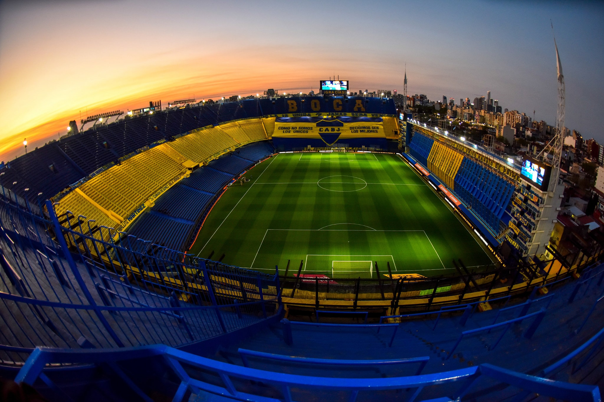

partidos
Sáb., 4 de Nov. Boca Juniors vs Fluminense 5:00 PM CONMEBOL Libertadores Dom., 5 de Nov. boca Juniors vs san lorenzo P.A. Argentine Copa de la Liga Profesional Dom., 12 de Nov. Boca Juniors vs Newell
El Club Atlético Boca Juniors es una entidad deportiva argentina, con sede en el barrio de La Boca, Buenos Aires. Fue fundado el 3 de abril de 1905 por seis vecinos adolescentes hijos de italianos. El fútbol masculino es su disciplina más destacada, aunque también compite a nivel profesional, nacional e internacionalmente, en baloncesto, voleibol, futsal, fútbol femenino y balonmano mientras que deportes como el boxeo, judo, karate, taekwondo, gimnasia rítmica, gimnasia artística y hockey se practican a nivel amateur. Actualmente se desempeña en la Liga Profesional de Fútbol Argentino.
A nivel internacional, es el tercer club con más títulos oficiales en el mundo (22), entre los cuales posee 18 a nivel confederativo e interconfederativo (FIFA y Conmebol) y 4 copas rioplatenses (AFA-AUF); y es el club con más títulos internacionales oficiales en toda América. Asimismo, es el máximo campeón de la Copa Intercontinental (3) a nivel mundial, junto con Peñarol y Nacional de Uruguay, Milan de Italia y Real Madrid de España. Además, es el club de América con más finales de copas internacionales confederativas e interconfederativas con 29 (3.º a nivel mundial, detrás de las 42 del Real Madrid y las 33 del Milan)
Sáb., 4 de Nov. Boca Juniors vs Fluminense 5:00 PM CONMEBOL Libertadores Dom., 5 de Nov. boca Juniors vs san lorenzo P.A. Argentine Copa de la Liga Profesional Dom., 12 de Nov. Boca Juniors vs Newell
Caos, miedo y desesperación es lo que viven los hinchas de Boca en Brasil. Lo que tendría que ser una fiesta se volvió una pesadilla tras los feroces ataques de los hinchas del Fluminense en la previa de lo que será la final de la Copa Libertadores.
Contactanos +543482513467